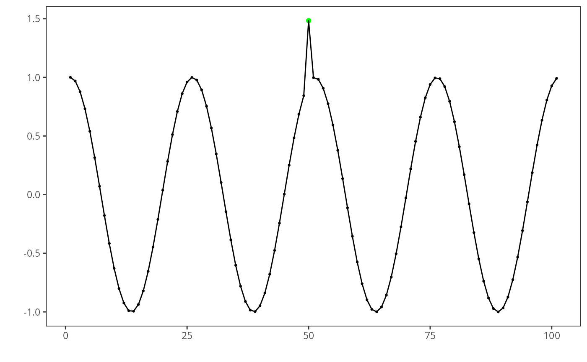

It accepts as harbinger, a time series, a data.frame of events, a parameter to mark the detected change points, a threshold for the y-axis and an index for the time series
Usage
har_plot(
obj,
serie,
detection,
event = NULL,
mark.cp = TRUE,
ylim = NULL,
idx = NULL,
pointsize = 0.5,
colors = c("green", "blue", "red", "purple")
)Arguments
- obj
harbinger detector
- serie
time series
- detection
detection
- event
events
- mark.cp
show change points
- ylim
limits for y-axis
- idx
labels for x observations
- pointsize
default point size
- colors
default colors for event detection: green is TP, blue is FN, red is FP, purple means observations that are part of a sequence.
Examples
library(daltoolbox)
#loading the example database
data(examples_anomalies)
#Using the simple time series
dataset <- examples_anomalies$simple
head(dataset)
#> serie event
#> 1 1.0000000 FALSE
#> 2 0.9689124 FALSE
#> 3 0.8775826 FALSE
#> 4 0.7316889 FALSE
#> 5 0.5403023 FALSE
#> 6 0.3153224 FALSE
# setting up time change point using GARCH
model <- hanr_arima()
# fitting the model
model <- fit(model, dataset$serie)
# making detections
detection <- detect(model, dataset$serie)
# filtering detected events
print(detection[(detection$event),])
#> idx event type
#> 50 50 TRUE anomaly
# evaluating the detections
evaluation <- evaluate(har_eval_soft(), detection$event, dataset$event)
print(evaluation$confMatrix)
#> event
#> detection TRUE FALSE
#> TRUE 1 0
#> FALSE 0 100
# ploting the results
grf <- har_plot(model, dataset$serie, detection, dataset$event)
plot(grf)
